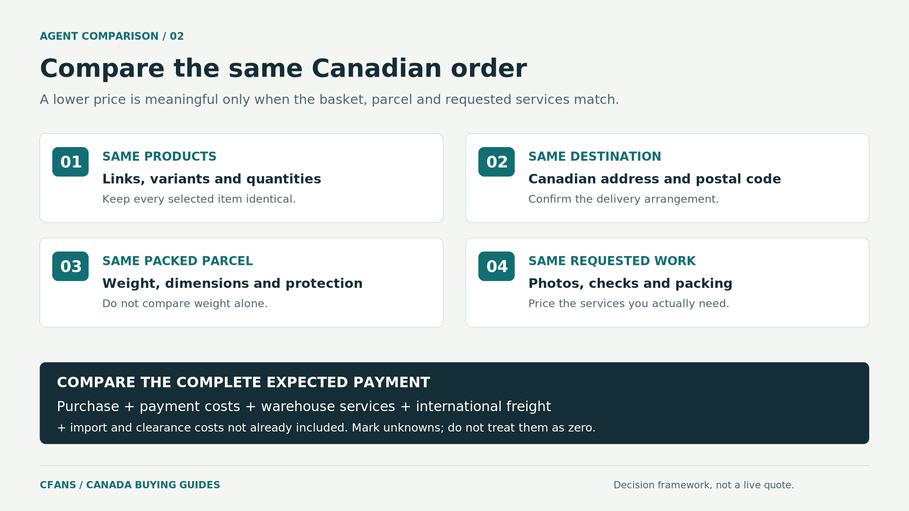

For a multi-store Taobao order to Canada, start by comparing CFans with Superbuy. CFans is relevant when you need purchasing, warehouse photos and consolidation. Superbuy offers a useful benchmark through its published standard purchasing and storage terms. Add CSSBuy when seller questions are central to your purchase, and Parcel Up when French-language assistance or a documented CAD payment option matters.[2][9][11][13][15]
These recommendations are based on the job each service can help you evaluate, not an unsupported claim that one agent wins every Canadian order. The final choice still needs an accepted product list, a route to your postal code and a complete quotation.
Disclosure: This comparison is published by CFans and includes our service. Public documentation was reviewed on October 28, 2026. No matched test shipments or Canada-specific price trials were conducted. The order below is not a measured performance ranking.
The shortlist at a glance
| Agent | Main reason to shortlist it | Deciding check for a Canadian order |
|---|---|---|
| CFans | A purchasing-to-warehouse-to-shipping process for a selected, multi-store basket. | Confirm the requested checks, complete charges and an eligible route to your postal code.[2] |
| Superbuy | Published no-fee standard Taobao purchasing and a 90-day free storage allowance. | Compare the final shipping, payment and optional-service costs, not the purchasing fee alone.[9] |
| CSSBuy | A documented seller-enquiry service alongside purchasing and warehouse handling. | Establish what questions will be answered, what checks are available and their total cost.[11][12] |
| Parcel Up | French-language shopping assistance, listed CAD payment support and explicit commission terms. | Compare the minimum commission and the actual CAD payment for your basket.[13][14][15] |
These capabilities can overlap. Their presence is a reason to request a quote, not evidence that a competitor lacks them.
Compare the same order. This framework does not assign performance scores to providers.
1. CFans: For a multi-store order with a warehouse review
CFans's published services include Taobao purchasing, photo-based warehouse checks, parcel consolidation and international shipping.[2]
The practical fit is a buyer who has selected products but wants an organised point to review them before approving international dispatch.
Consider an illustrative basket containing a jacket, a canvas bag and a desk accessory from three sellers. Your decision is not just whether someone can buy the links. It is whether the jacket matches the requested variant, whether the bag includes the selected strap and whether the accessory needs protective packing.
For that basket, ask CFans for a purchase record by item and the photographs needed to answer those questions. Specify which packaging can be removed and which must remain. Compare the final shipment after those requirements have been accepted.
Choose CFans when its confirmed purchase, inspection and delivery arrangement fits the basket you intend to receive. Its public descriptions do not establish a universal Canada freight rate, a CAD billing promise or a particular insurance entitlement. Obtain those order-specific terms before payment.
This is also where a small first order is useful: it lets you evaluate the information and approval stages before increasing the size of your basket.
2. Superbuy: For a published purchasing-fee and storage benchmark
Superbuy lists no standard purchasing service fee for Taobao and provides a 90-day free storage period under its published policy. Its fee structure separately describes international shipping and optional services.[9]
That makes it a useful comparison for a straightforward Taobao basket or purchases you plan to accumulate over time. Its shipping calculator lists Canada and asks for parcel weight, dimensions and item category.[10]
The decision is whether the whole offer works, not whether one line on the bill is zero. Add the actual payment cost, requested photographs or checks, packing and the selected Canadian shipping option before comparing it with CFans.
For clothing, identify any detail photo or measurement you need before funding the order. For a staggered basket, review each arrival promptly rather than treating storage time as permission to postpone a return decision.
Start with Superbuy when published standard purchasing and storage terms are important to your comparison. Keep it only if the final quote and the services you need remain competitive for the actual order.
3. CSSBuy: For purchases that need seller clarification
CSSBuy documents a Contact Seller service for investigating product questions. Its broader service description includes buying from Chinese marketplaces and warehouse checks.[11][12]
That is a useful fit when the listing is not clear enough to approve: a bag's strap may be optional, a decorative item may have two materially different sizes, or the displayed photograph may show accessories that are not included in the selected variant.
In that situation, ask a precise question and keep the answer with the order. “Does the selected option include both straps?” is more actionable than “Is this a good product?”
Price the enquiry and the checks you need as part of the purchase. CSSBuy's calculator asks for dimensions, weight, commodity attributes and destination, so keep those inputs consistent when obtaining a comparison quote.[18]
Choose CSSBuy when its accepted enquiry and warehouse scope resolves a purchasing uncertainty at an acceptable total cost. Do not select it solely because another buyer called it cheap for a different parcel or country.
4. Parcel Up: For French-language assistance and a CAD payment option
Parcel Up explicitly describes shopping assistance in French and lists Canada among its delivery destinations. Its payment guidance also includes Canadian dollars.[13][15]
For a French-speaking Canadian shopper, that creates a specific reason to compare it with an English-led platform. Confirm how the product conversation and support will be handled before placing the order.
Its published service fee is 10% of the item price including domestic delivery, with a minimum of RMB35.[14] A stated percentage and minimum make the purchasing charge easier to calculate, but do not determine the complete delivered cost.
For example, on an illustrative RMB100 purchase with no domestic delivery charge, the RMB35 minimum would exceed the RMB10 produced by the percentage alone. International shipping and any other applicable costs would still need to be considered.
Consider Parcel Up when language support and its purchasing process are worth the quoted cost to you. For a single inexpensive item, compare the minimum fee especially carefully. A CAD payment option also does not, by itself, prove the lowest conversion cost.
What should change your choice in Canada?
Compare the Canadian dollars you actually pay
Keep the shopping basket fixed and compare quotes on the same day. Record the CAD debit required for the purchase, the shipping payment and any later charges.
A site may display one currency while the transaction is funded or settled in another. Ask what you will be charged and check the payment provider's conversion before approving it. Do not count a conversion cost twice if it is already included in the recorded debit.
For CFans, request the payment options available to your account rather than assuming that a general multi-currency statement specifically guarantees CAD billing.
Check the postal code, not just the country selector
Give each agent your actual Canadian postal code, address type and delivery requirement. Ask whether the proposed service accepts that destination and whether any location-specific charge or delivery limitation applies.
For an apartment, confirm the unit information. For a post office box or a collection preference, establish whether the selected service can accommodate it. Do not infer those details from the word “Canada” in a destination list.
Ask which carrier handles final delivery and how to identify the local tracking number. A shipping quote should describe a usable delivery arrangement, not merely a country and a price.
Treat light, bulky purchases differently from dense parcels
DHL Express's published calculation uses the higher of actual and volumetric weight, with centimetre dimensions divided by 5,000.[8]
Under that formula, an illustrative 3 kg parcel measuring 40 × 30 × 25 cm has a volumetric weight of 6 kg. That is why two quotes for “3 kg to Canada” may not represent the same billable shipment.
Use the same packed dimensions and protection requirements for each agent. The divisor and rounding rules must come from the selected route; the DHL example is not a universal CFans or Canada rule.
For soft goods, ask about removing redundant outer packaging. For collectibles, decide whether preserving the box matters more than reducing dimensions. The right agent is the one that can accommodate the packing you actually require.
Separate taxes from the courier's own charges
A Canadian comparison needs to include both government charges and any carrier administration fees. CBSA states that courier clearance fees are private charges distinct from duties and taxes.[7]
For most eligible parcels sent directly from China, the low-value relief threshold is C$20. Higher C$40 tax and C$150 duty thresholds concern qualifying courier imports from the United States or Mexico, not ordinary direct shipments from China.[4]
The higher thresholds do not require US- or Mexican-made goods. However, the goods must meet the relevant shipment conditions, including having entered commerce in the US or Mexico. Simply passing through either country is not enough.[16]
For postal delivery, Canada Post's listed C$9.95 handling fee applies to taxable or dutiable mail items; do not apply it to every courier quote.[6]
If an agent offers a tax-inclusive option, ask exactly which charges it includes, who handles the declaration and what happens after any reassessment. A commercial label does not remove the obligation to declare the goods accurately.[7]
How to compare two agents without buying the order twice

Prepare one shared order brief and send it to both candidates. Use the same product links, variants, quantities, Canadian postal code, required checks and packaging instructions.
Ask each provider to distinguish the purchase amount, estimated international shipping and charges that cannot yet be confirmed. Then compare:
Goods + domestic delivery + purchasing/payment costs + requested checks and packing + international freight + import/clearance costs not already included.
Do not assign a zero to an unanswered cost. Do not compare a shipping estimate that excludes tax with another price that includes it without making the difference explicit.
A useful decision record has three outcomes: the provider accepts the items; it agrees to the checks and delivery requirements; and the complete expected payment is acceptable. A lower quotation is not a win if it fails one of the first two conditions.
For example, with a jacket whose sizing is uncertain, a provider that can deliver a useful measurement may be preferable to one quoting less but offering only a generic exterior photo. This is a service-value judgement, not a claim about either company's inspection performance.
Before choosing, check when you can still resolve a problem
Set an approval point before international dispatch. Ask how you will be notified of an incorrect variant, missing accessory or visible defect, and whether shipment can be paused while you decide.
Review the seller-return process separately from transport protection. For a product problem, establish the return deadline and who pays domestic return costs. For a lost or damaged shipment, check covered events, exclusions, compensation basis, evidence requirements and claim deadlines.
Do not assume that a long free-storage period extends a seller's return window, or that a parcel-protection option covers every kind of loss.
For a first order, the most useful test is whether the provider can turn your specific concern into an agreed task and a documented response. Generic assurances are not a substitute for that agreement.
Frequently asked questions
Which Taobao agent is cheapest for Canada?
No universal price winner was established in this comparison. Superbuy's standard purchasing fee and Parcel Up's commission schedule are documented, but neither identifies the cheapest complete Canadian shipment.[9][14] Compare the same basket, packing and destination, with the same treatment of import charges.
Is CFans suitable for a first Canadian order?
CFans is worth considering when you need its documented purchasing and warehouse workflow.[3] Start with a manageable basket, specify the review you need and confirm a delivery option for your postal code. The order-specific response should decide whether you proceed.
Do Canadians still need an agent if Taobao has English?
Not necessarily. Taobao lists Canada among its English-interface regions.[1] Use an available checkout yourself when it meets your needs. Choose an agent for additional purchasing or warehouse work, not solely because an older guide says the app cannot be used in English.
Which agent should French-speaking Canadians consider?
Parcel Up is a relevant candidate because it explicitly advertises French-language assistance.[15] Confirm the support arrangements and compare its complete price with other suitable services; language availability is one selection factor, not a performance guarantee.
Which would we choose?
For a selected, multi-store basket needing a review before shipment, compare CFans and Superbuy first. The former is relevant to the purchasing-and-warehouse workflow; the latter provides a published fee and storage benchmark.
For unresolved listing details, add CSSBuy. For French-language assistance and a documented CAD payment option, add Parcel Up.
Choose from the resulting quotations, not from a permanent winner's badge. The best Taobao agent for Canada is the one that accepts your order, performs the checks you need and explains the complete delivery arrangement before you commit.
To evaluate CFans for your next order, submit the product links, chosen variants and Canadian postal code, together with the photographs or measurements you need before shipping.
Sources and verification
Public sources reviewed October 28, 2026. Provider documentation describes the stated service, not independently observed performance.
- [1] Taobao official Canadian app listing
- [2] CFANS service description on Google Play
- [3] CFANS service description on the App Store
- [4] CBSA: Low-value shipment thresholds
- [6] Canada Post: Customs duty, taxes and exemptions
- [7] CBSA: Importing casual goods by courier
- [8] DHL Express: Calculating volumetric weight
- [9] Superbuy: Fee structure
- [10] Superbuy: Shipping calculator
- [11] CSSBuy: Contact Seller service
- [12] CSSBuy: Service overview
- [13] Parcel Up: Payment and shipping
- [14] Parcel Up: Order procedure and service fees
- [15] Parcel Up: Service overview
- [16] CBSA: Courier Imports Remission, D8-2-16
- [18] CSSBuy: Shipping calculator
Last updated: October 2026 · CFans — cfans.com · All guides